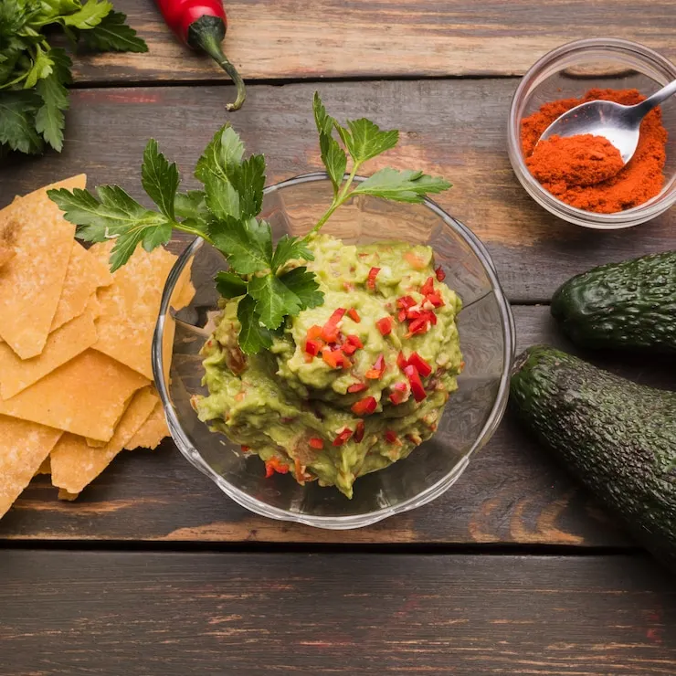

Guacamole
Home

Guacamole originates out of Mexico, specifically the people of Aztec.
In the late 1990s, guacamole became popularized in the United States with the openings of Tex-Mex restaurants.
Today, guacamole is a celebrated mexican cuisine. It can be used as a dip, side, or healthy snack.
Ingredients
- Five avocados-peeled.pitted, and mashed
- Two tablespoons fresh lemon juice
- 3/4 cup minced green onion
- 1/2 cup minced fresh cilantro
- Salt and pepper, to taste
Steps for Guacamole
- Stir together the avocado and lemon juice in a serving bowl.
- Add the green onion and cilantro; mix well.
- Season with salt and pepper.
- Serve immediately or store covered in refrigerator with avocado pits in the bowl to keep from browning
- Enjoy!